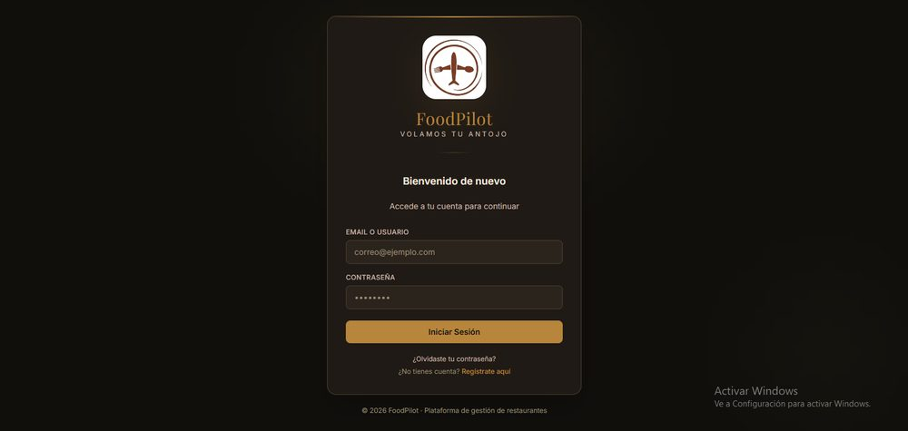
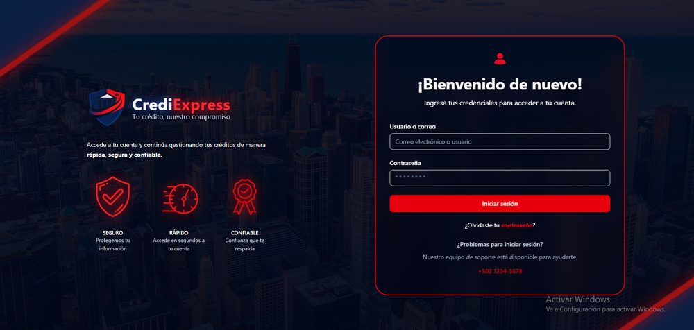
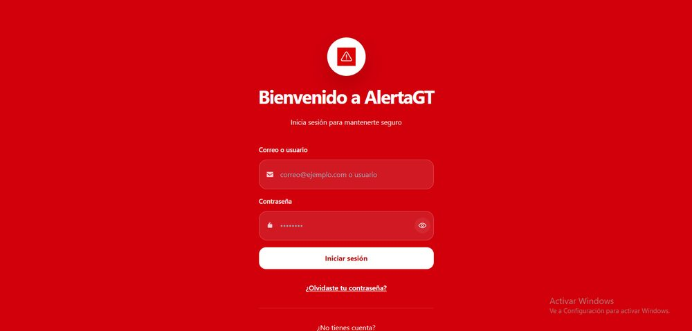
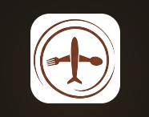
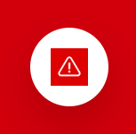

Portafolio de proyectos
Una selección de proyectos finalizados, con su vista previa, tecnologías usadas y enlace al repositorio.
Vista general
Un vistazo visual antes de entrar al detalle de cada proyecto.

FoodPilot

CrediExpress

AlertaGT
Portafolio
Proyectos finalizados, con su descripción, habilidades aplicadas y enlace al código fuente.

FoodPilotPlataforma de gestión de restaurantes con arquitectura de microservicios: administración de menús, mesas, pedidos y reservaciones, con roles para administradores de plataforma, de restaurante y clientes.
Sistema bancario con arquitectura de microservicios para el manejo seguro de cuentas, transferencias, historial de transacciones y conversión de divisas, con autenticación por roles y permisos.

AlertaGTAplicación de alertas geolocalizadas para reportar y notificar accidentes o riesgos cercanos en Guatemala, con notificaciones push, autenticación segura y protección contra bloqueo de cuentas.